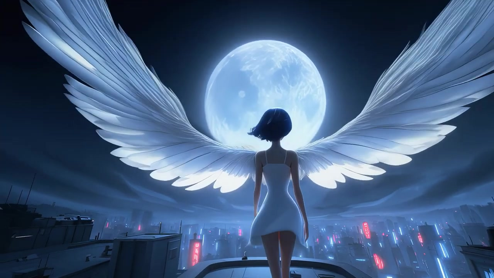

RECORD
AI visual studio
Character · Film · VFX
INDEPENDENT VISUAL STUDIO
CHARACTER / FILM / VFX01 / SELECTED CREDITS
Selected credits.
02 / PERSONAL WORK
Personal work.


03 / PRESS
Latest news.
Studio
회사 소개
Work
작업물
News
소식과 영상
Z12
캐릭터 아카이브